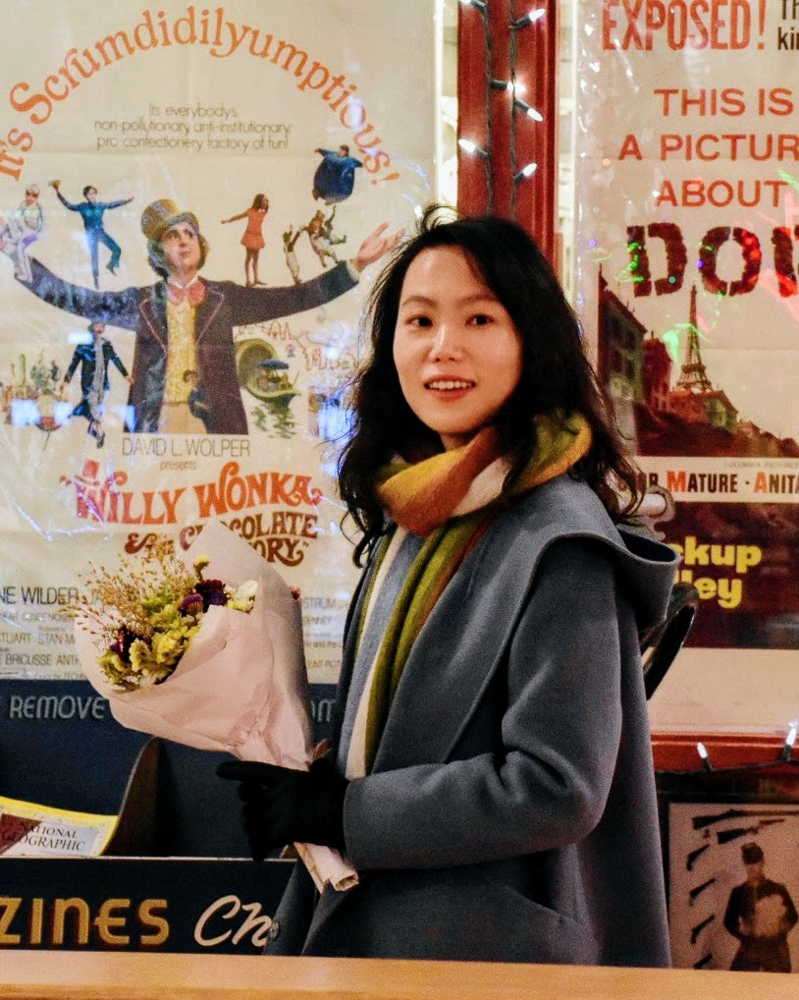

I am a Principal Research Scientist at Microsoft's Office of Applied Research. Before Microsoft I was a scientist at Airbnb working on ML and NLP problems.
I obtained my Ph.D. at the University of California, San Diego, advised by Prof. Julian McAuley. Before that, I received my master's in Statistics from UIUC, and my bachelor's in Statistics from Peking University (Yuanpei Program).
My current research spans LLM social reasoning, agentic systems, and reinforcement learning, with a recent focus on multiparty agents and simulating realistic user interactions. My earlier work was on recommender systems, graph machine learning, and network science.

Selected Publications
See Google Scholar for a complete list.
- Interactive Speculative Planning: Enhance Agent Efficiency through Co-design of System and User Interface
- TnT-LLM: Text Mining at Scale with Large Language Models
- Interpretable User Satisfaction Estimation for Conversational Systems with Large Language Models
- S3-DST: Structured Open-Domain Dialogue Segmentation and State Tracking in the Era of LLMs
- Workplace Recommendation with Temporal Network Objectives
- Large-Scale Analysis of New Employee Network Dynamics
- Learning Causal Effects on Hypergraphs
Academic Service
I am currently taking a break from paper reviewing, with very few exceptions. I used to actively serve for top-tier conferences and journals in Machine Learning, NLP, and Recommender Systems, and have won several top-reviewer awards.
Workshop Organization
- RecWork 2022 — Recommender Systems for the Future of Work
- RecNLP 2019 — AAAI Workshop on Recommender Systems and NLP
Paper Reviewing
- Conferences AAAI, ACL, AISTATS, CIKM, EMNLP, ICLR, ICML, ICWSM, NeurIPS, RecSys, SDM, TheWebConf
- Journals TPAMI, TKDE, TOIS, TIST, TMLR